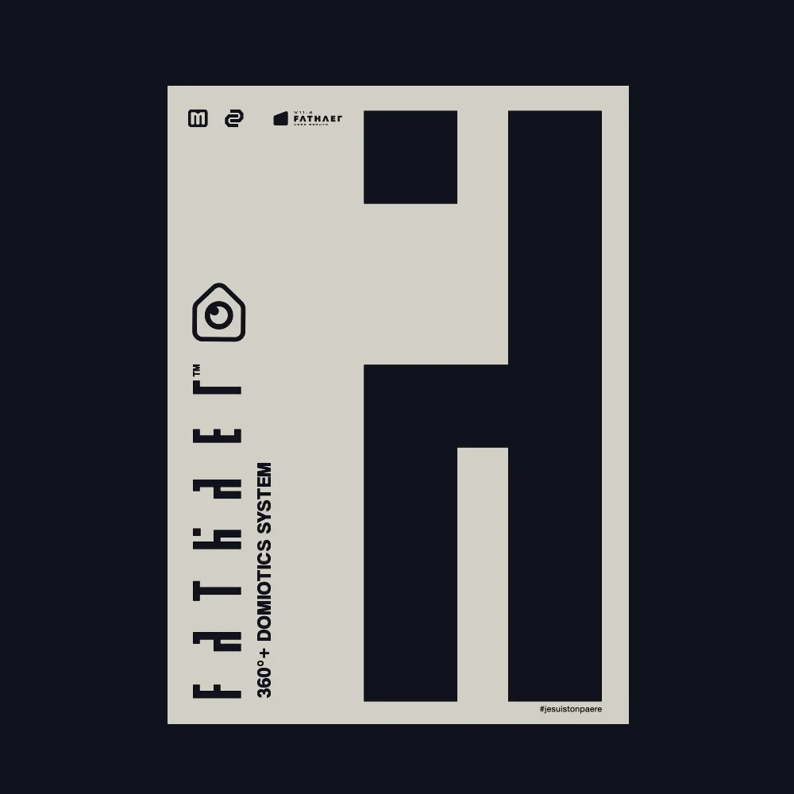

Du signe typographique à l’interface : une recherche d’identité pour un univers domotique.

Haello et Tribe prolongent la recherche dans deux écrans : une présence centrale, puis un ensemble de modules.